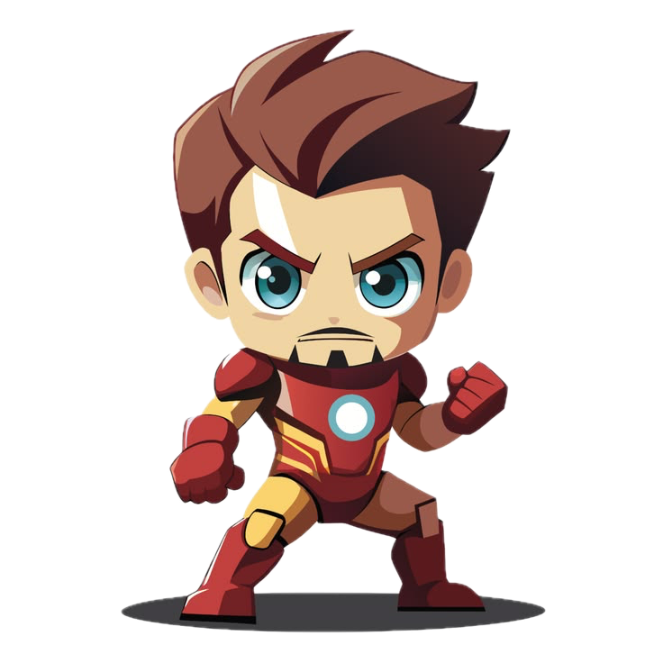

Hydration reminders
Get a friendly speech-bubble nudge on your schedule. Choose an interval from 15 minutes to 2 hours, or pause reminders any time.
A little companion for Windows
A tiny character that wanders across your screen, nudges you to take a break, and keeps you company while you work.
Kiko is Windows-only for now. You can still download the installer.

Right there with you.Every pet has its own personality. Your choice follows you through the page.
Kiko
A small desktop companion, with the useful little tools built right in.
Get a friendly speech-bubble nudge on your schedule. Choose an interval from 15 minutes to 2 hours, or pause reminders any time.
Double-tap your desktop pet to open Notes. Keep up to 50 notes and let them autosave on your PC.
Start a Pomodoro session from the tray. Choose a 15, 25, 45, or 50-minute focus, then a 5, 10, or 15-minute break.
Let your companion explore the screen. Adjust how often it moves, set its jump height, or turn movement off.
Spider-Man hangs from a web. Pull and tilt him with your cursor, then watch him spring smoothly back to his spot.
Pick from the character collection in Settings or the tray menu. Switch pets whenever you feel like a change.
Adjust character size and animation speed, and keep Kiko above other windows when you want it close by.
Build a daily-use streak to unlock the Shadow look after 3 days and Neon after 7.
Turn the gentle chime on or off, and optionally show reminders as native Windows notifications too.
Right-click Kiko to open Settings. Use the tray to pause reminders, hide the pet, choose a companion, or control movement and focus sessions.
Choose whether Kiko starts with Windows. Your preferences stay saved locally between sessions.
Your companion lives on your desktop, not in the cloud.
Kiko is a desktop app, so it stays on your PC and works without an account.
Get the Windows installer directly from this page.
Windows may show a SmartScreen notice the first time. Click “More info”, then “Run anyway”.
Right-click Kiko for Settings, or use its tray icon for quick controls.
One small app. No account needed.
System requirements: Windows 10 or 11, 64-bit, about 150 MB free disk. No admin rights required.
The installer is not code-signed yet, so Windows may show “Windows protected your PC”. Click More info, then Run anyway.
Kiko is Windows-only for now. You can still download the installer.
Kiko is built with Electron. Memory use varies with your system and what else is running.
Yes. Kiko runs entirely on your PC. No internet connection is required after you download it.
Kiko has no in-app telemetry or analytics, and its settings stay on your machine. If you choose to sign up for release emails, your email address is sent to Formspree for update notifications; signing up is optional.
Yes. The default is every hour, but you can set it anywhere from 15 minutes to 2 hours. You can also pause reminders entirely from the tray menu.
Yes. Set a custom reminder message in Settings, then double-tap your pet to open Notes. Notes autosave on this PC.
Yes. Settings lets you choose a pet, adjust its size and animation speed, and tune movement and jump height. Daily-use streaks unlock additional outfits.
Kiko stays on top of normal windows, but it automatically hides when a full-screen app or game is in focus so it doesn’t get in the way.
Open Windows Settings → Apps → Installed apps, find Kiko, and click Uninstall. Your settings file is removed with it.
Not right now. Kiko is built specifically for Windows 10 and 11. If that changes, we’ll announce it on GitHub.